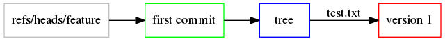

Cook book¶
@todoAlpha Cookbook about Repository.create_file etc. @todoAlpha Write it “cookbook” everywhere as the internets seem to agree on this spelling
Working with gists¶
This cook book shows you everything about gists and the gists API.
Initialization:
>>> import datetime
>>> import PyGithub
>>> g = PyGithub.BlockingBuilder().Login("your_login", "your_password").Build()
>>> u = g.get_authenticated_user()
Creating and deleting gists¶
The simplest, personal, private gist, with one file and no description:
>>> gist = u.create_gist(files={"foo.txt": {"content": "barbaz"}})
>>> print gist.owner.login
jacquev6
>>> print gist.public
False
>>> print len(gist.files)
1
>>> print gist.description
None
Deletion:
>>> gist.delete()
An anonymous, public gist, with several files and a description:
>>> gist = g.create_anonymous_gist(files={"foo.txt": {"content": "barbaz"}, "bar.txt":{"content": "toto"}}, public=True, description="Created with PyGithub")
>>> print gist.owner
None
>>> print gist.public
True
>>> print gist.description
Created with PyGithub
>>> print len(gist.files)
2
You can also fork an existing gist using Gist.create_fork().
Retrieving gists¶
List personal gists:
>>> for gist in u.get_gists():
... print gist.description
...
Test script for https://github.com/jacquev6/PyGithub/issues/194
Github API
Test gist for PyGithub
...
In addition to AuthenticatedUser.get_gists(), you can use AuthenticatedUser.get_starred_gists(), User.get_gists() and Github.get_public_gists() to retrieve lists of gists.
Here are the gists modified by Vincent Driessen since the begining of 2014. GitHub returns them ordered by descending creation date:
>>> for gist in g.get_user("nvie").get_gists(since=datetime.datetime(2014, 1, 1, 0, 0, 0)):
... print "{} ({}, {})".format(gist.description, gist.created_at, gist.updated_at)
...
Really useful helper that I use constantly to force myself to write more efficient Django queries. (2013-11-29 08:59:02, 2014-04-22 10:02:20)
Which API is the nicest for the new RQ with concurrency? (2013-02-04 15:58:06, 2014-06-25 19:09:55)
Initial experiment with a possible new worker structure for RQ (2012-08-30 21:22:56, 2014-07-16 08:54:35)
Get Mountain Lion and Homebrew to Be Happy (2012-07-26 07:46:47, 2014-04-08 18:19:17)
A WSGI middleware wrapper to add gzip to your WSGI app (2012-05-22 15:11:17, 2014-01-29 14:12:19)
Get a single gist:
>>> gist = g.get_gist("5339374")
>>> print gist.id
5339374
>>> print gist.html_url # Redirects to https://gist.github.com/jacquev6/5339374
https://gist.github.com/5339374
Modifying gists¶
Change description:
>>> print gist.description
Test gist for PyGithub
>>> gist.edit(description="Test gist for PyGithub - edited")
>>> print gist.description
Test gist for PyGithub - edited
Star and unstar:
>>> print u.has_in_starred_gists(gist)
False
>>> u.add_to_starred_gists(gist)
>>> print u.has_in_starred_gists(gist)
True
>>> u.remove_from_starred_gists(gist)
>>> print u.has_in_starred_gists(gist)
False
Add a file (files not listed are kept unchanged):
>>> print gist.files.keys()
[u'baz.txt']
>>> gist.edit(files={"new.txt": {"content": "toto"}})
>>> # For some reason, from time to time, the response to the PATCH request still contains new.txt. :meth:`.update` fixes that.
>>> gist.update() or True
True
>>> print sorted(gist.files.keys())
[u'baz.txt', u'new.txt']
Move a file:
>>> gist.edit(files={"new.txt": {"content": "toto", "filename": "moved.txt"}})
>>> # Idem
>>> gist.update() or True
True
>>> print sorted(gist.files.keys())
[u'baz.txt', u'moved.txt']
Delete a file:
>>> gist.edit(files={"moved.txt": None})
>>> # Idem
>>> gist.update() or True
True
>>> print gist.files.keys()
[u'baz.txt']
Working with raw Git objects¶
This cook book shows you how to manipulate raw Git objects. Do not forget that higher-level functions like File.edit() are available. If you really need to use these low-level functions and are not too familiar with git internals, you may want to read the “Git Internal Objects” chapter of Pro Git.
In this cook book, we are going to create a new branch with two commits:

Initialization:
>>> import PyGithub
>>> g = PyGithub.BlockingBuilder().Login("your_login", "your_password").Build()
>>> u = g.get_authenticated_user()
>>> r = u.create_repo(name="PyGithubCookbookRawGitObjects", auto_init=True)
Create the first blob:
>>> v1 = r.create_git_blob(content="version 1", encoding="utf-8")
>>> print v1.sha
e32092a83f837140c08e85a60ef16a6b2a208986
Create the first tree:
>>> t1 = r.create_git_tree(tree=[{"path": "test.txt", "mode": "100644", "type": "blob", "sha": v1.sha}])
>>> print t1.sha
ffe9ce5421c3a1cbd84a858f8f5696029574abdc
Create the first commit:
>>> c1 = r.create_git_commit(tree=t1, message="first commit", parents=[])
>>> print c1.sha
82edca525abba78394bf6494b568fccff00a7117
Finally create the branch:
>>> ref = r.create_git_ref(ref="refs/heads/feature", sha=c1.sha)
We now have a branch with one commit. You should check on http://github.com/{user}/PyGithubCookbookRawGitObjects/branches:
Create a new tree and a second commit:
>>> new = r.create_git_blob(content="new file", encoding="utf-8")
>>> print new.sha
1271944b7e20c7a2cc2708dba5cf8370147d77d4
>>> t2 = r.create_git_tree(tree=[{"path": "test.txt", "mode": "100644", "type": "blob", "sha": v1.sha}, {"path": "new.txt", "mode": "100644", "type": "blob", "sha": new.sha}])
>>> print t2.sha
13697ff08a956c8c2076eaac7a0fb27de17d8fb5
>>> c2 = r.create_git_commit(tree=t2, message="second commit", parents=[c1])
>>> print c2.sha
bc6e1205629f3ee927e603e2c657866dbd9396e6
Update the branch:
>>> ref.edit(sha=c2.sha)
And we’re done:
@todoAlpha Demonstrate GitTree.create_modified_copy() and usage of parameter content in Repository.create_git_tree(). @todoAlpha Demonstrate lightweight tags (through GitRef) and tag objects (actual GitTag). @todoAlpha GitRef.object and GitTag.object should be a union of GitTree GitBlob and GitCommit.
Please use comments to share something specific about this page with the community. Use GitHub issues if you have a question, want to report a bug. Note that you can comment anonymously.